자기비파괴검사산업기사(구) (2003-03-16 기출문제)
1과목: 자기탐상시험원리
1. 다음 중 자분탐상시험의 특징이 아닌 것은?
- 재질이 다른 금속이 혼합된 표면 불연속의 검출이 가능하다.
- 타 검사방법에 비해 검사시간이 짧다.
- 표면 바로밑에 존재하는 불연속도 검출이 가능하다.
- 재료의 특성을 변화시킬 수 있다.
(정답률: 알수없음)

2. 자분탐상검사후 시험품의 탈자시 잔류자기를 제일 작게하려면 어떤 방법이 좋은가?
- 교번자장을 교류로 만들어 사용하는 방법
- 직류를 사용하는 방법
- 자화한 방법과 동일한 자화방법을 사용하고 직류를 교대로 반전하면서 줄이는 방법
- 회전시켜서 하는 방법
(정답률: 알수없음)
3. 강봉의 자분탐상검사시 누설자속을 일으키는 원인으로 가장 적절한 것은?
- 균열
- 표면페인트
- 봉의 굽힘
- 자장의 반점
(정답률: 알수없음)
4. 원형자장을 이용하여 자분탐상을 수행할 경우 장점이 아닌 것은?
- 자극이 필요하지 않다.
- 강한자장이 필요하다.
- 영구자석을 이용하므로 편리하다.
- 검사조작이 일반적으로 간편하다.
(정답률: 알수없음)
5. 그림의 자기이력곡선에서 OA 및 OD에 해당하는 것은?
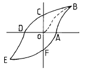
- 자화력
- 보자력
- 항자력
- 투자율
(정답률: 알수없음)
6. 다음 결함중 주물제품에서만 나타나는 결함이 아닌 것은?
- Cold Shut(콜드 셧)
- Shrinkage Cavity(수축공)
- Porosity(기공)
- Segregation(편석)
(정답률: 알수없음)
7. 의사지시 모양을 확인하는 방법으로 적당치 않은 것은?
- 재현성 확인
- 자분제거후 세밀한 관찰
- 다른 결함모양과 비교
- 잔류법으로 자분적용
(정답률: 알수없음)
8. 형광자분탐상검사를 할 경우 꼭 필요한 장치를 아래에서 모두 고르면?
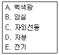
- A, B, C, D
- B, C, D
- A, C, D, E
- B, C, D, E
(정답률: 알수없음)
9. 자석에 강하게 작용하고 투자율이 높아, 쉽게 자화될 수 있어 자분탐상시험으로 검사하기에 가장 적합한 재료는?
- 강자성체
- 상자성체
- 반자성체
- 비자성체
(정답률: 알수없음)
10. 아래 조건은 무엇에 대한 내용인가?
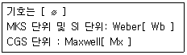
- 투자율
- 자속
- 자속밀도
- 자계의 강도
(정답률: 알수없음)
11. 자분탐상검사 장비의 통상적인 교정주기(Calibration fre-quency)는 얼마로 되어 있는가?
- 8시간
- 일주일
- 6개월
- 1년
(정답률: 알수없음)
12. 그림과 같이 자화하는 물체를 무엇이라 하는가?
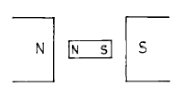
- 상자성체
- 강자성체
- 반자성체
- ferri자성체
(정답률: 알수없음)
13. 자성체가 자력을 제거한 후에도 재료내에 잔류자기를 유지하려는 능력을 나타내는 용어는?
- 투자성
- 항자력
- 보자성
- 자장
(정답률: 알수없음)
14. 다음 중 삼상전파 정류 AC의 파형은?
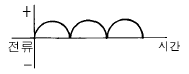
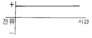
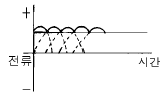
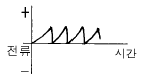
(정답률: 알수없음)
15. 내경이 10㎝인 시험체의 내부중심에 직경 4㎝인 전선을 관통시켜서 자화를 유도시키고자 한다. 시험체의 내부표면에 8올스테드[Oe]의 자장을 형성시키려면 전선에 흐르는 전류는 얼마나 되어야 하겠는가?
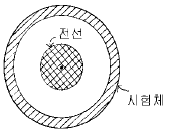
- 100암페어
- 250암페어
- 500암페어
- 800암페어
(정답률: 알수없음)
16. 연속법으로는 적용할 수 없으며, 잔류법 검사에만 적용이 가능한 자화 전류의 종류는?
- 직류
- 맥류
- 교류
- 충격전류
(정답률: 알수없음)
17. 압력용기를 내압시험하고나서 용접부에 대한 자분탐상검사법으로 많이 사용되는 방법은?
- 극간법으로 한다.
- 통전법으로 한다.
- 코일법으로 한다.
- 전류관통법으로 한다.
(정답률: 알수없음)
18. 시험체의 두께 2인치, 너비 4인치, 길이 13인치인 쇠막대인 경우 필요한 원형자화 전류는?
- 400∼600A
- 600∼800A
- 1,200∼1,600A
- 1,600∼2,400A
(정답률: 알수없음)
19. 자분탐상검사의 장점이 아닌 것은?
- 검사 방법이 비교적 간단하고 검사속도가 빠르며, 검사비용이 저렴하다.
- 결함모양이 표면에 직접 나타나 육안으로 관찰할 수있다.
- 시험품의 크기, 형상 등에 그다지 구애를 받지 않는 다.
- 불연속부의 방향과 자계의 방향이 수직이어야 한다.
(정답률: 알수없음)
20. 두 자기량 m, m'가 투자율(μ)와 자극간의 간격(r)사이의 척력(F, newton)의 표시는?
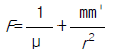
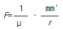
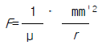
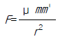
(정답률: 알수없음)
2과목: 자기탐상검사
21. 의사지시에 대한 다음 설명중 틀린 것은?
- 극간법에 있어서 자극의 접촉부 및 그 주변부에 국부적으로 생기는 고밀도의 누설자속에 의해 형성되는 자분모양을 자극지시라 한다.
- 프로드법에서는 프로드 한쪽에만 자속밀도가 아주 높기 때문에 이 한쪽의 접촉점을 중심으로 원주 모양의 자극지시가 많이 발생한다.
- 전류지시란 대전류가 흐르고 있는 자화케이블 등이 시험면에 접촉되면 그 부분이 국부적으로 자화되어 생겨나는 자분모양을 말한다.
- 시험체의 자기회로의 단면적이 급변하는 곳에 자분이 흡착 또는 고이게 되어 나타나는 자분모양을 단면급변 지시라 한다.
(정답률: 알수없음)
22. 자분탐상검사에서 자화방법의 종류 선택시 틀린 것은?
- 예상되는 결함에 가능한 한 직각이 되는 자장이 시험체에 형성되도록 한다.
- 반자계가 가능한 한 일어나지 않도록 한다.
- 대형 시험체는 시험면을 분할하여 국부적으로 자화시킨다.
- 잔류법에 의한 시험의 경우에는 교류 자화를 해야 한다.
(정답률: 알수없음)
23. 금속이 응고될 때 원소나 화합물의 분포가 일정하지 않아 나타나는 불연속으로 주로 표면하(아래)의 결함으로 검출되나 자분탐상검사를 하면 불규칙하지만 주로 선상모양으로 검출되는 불연속은?
- 파이프
- 편석
- 수축관
- 핫티어
(정답률: 알수없음)
24. 자분탐상검사에 사용되는 자분의 특성으로 올바른 것은?
- 높은 항자성을 가질 것
- 높은 보자성을 가질 것
- 높은 자기투자율을 가질 것
- 높은 휘발성을 가질 것
(정답률: 알수없음)
25. 자분의 선택시 고려할 성질이 아닌 것은?
- 자기적 성질(magnetic)
- 입도형상(geometric)
- 보자성이 높은 것(high retentivity)
- 자분 색조 및 휘도(輝度)
(정답률: 알수없음)
26. 자분탐상시험에서 탈자를 하는 가장 큰 목적은?
- 결함지시를 정확히 확인하기 위하여
- 자분이 제거된 것을 보증하기 위하여
- 시험품의 취급을 쉽게하고 작업자의 안전위생을 위하여
- 잔류자기를 제거하여 다음의 가공작업을 쉽게 하기 위하여
(정답률: 알수없음)
27. 형광자분 모양을 사진으로 촬영하려면 어떻게 하는가?
- 일반 플레쉬를 사용하여 카메라로 촬영한다.
- 자외선등 아래에서 1/60초 또는 B셔터를 사용하여 촬영한다
- 일반 카메라 렌즈에 특수한 필터를 끼워서 촬영한다.
- 자외선등의 밝기보다 10배 정도 밝게 하여 촬영한다.
(정답률: 알수없음)
28. 강판의 누설자속탐상검사시 적합한 주사 방식은?
- 탐상 헤드를 정지시키고 시험품을 회전시킨다.
- 탐상 헤드를 직진시키고 시험품을 회전시킨다.
- 탐상 헤드를 회전시키고 시험품을 직진시킨다.
- 탐상 헤드를 정지시키고 시험품을 직진시킨다.
(정답률: 알수없음)
29. 용접부 결함중에서 자분탐상시험으로 검출되지 않는 결함은?
- 크레이터 균열
- 응력부식 균열
- X형 용접부의 용입부족
- 슬래그 개재
(정답률: 알수없음)
30. 자분탐상시험법으로 검사하여 어떤 지시가 나타났을 때의 옳은 설명은?
- 그 지시의 내부에 결함이 있다.
- 그 지시부분에 결함이 있다.
- 자분모양이 나타난 것만으로는 결함의 유무는 알 수가 없다.
- 그 지시의 표층부에 결함이 있다.
(정답률: 알수없음)
31. 압연봉재에 있는 시임(seam)을 검출하기 가장 쉬운 자분 탐상시험법은?
- 선형자화
- 코일자화
- 원형자화
- 진동자장 자화
(정답률: 알수없음)
32. 다음 중 자분탐상검사시 잔류법으로 쉽게 검사할 수 있는 경우는?
- 시험품의 모양이 단순할 때
- 시험품의 전도도가 높을 때
- 시험품의 보자력이 높을 때
- 시험품의 투자율이 작을 때
(정답률: 알수없음)
33. 건식 자분을 이용하여 프로드법으로 자분탐상시험할 경우 소요 전류를 결정하는 요소는?
- 시험품의 두께
- 프로드의 간격
- 시험품의 투자율
- 시험품의 전도도
(정답률: 알수없음)
34. 자분탐상시험 관련 부속기기와 단위의 조합이 틀린 것은?
- 침전관 : g/ℓ
- 조도계 : Lux
- 전류계 : Ampere
- 자외선강도계 : μW/cm2
(정답률: 알수없음)
35. 직류 축통전법에 의하여 자분탐상시험시 환봉지름 25㎜당 1000A를 적용하게 되어 있다면 가로 75㎜, 세로 100㎜의 단면을 갖는 사각형재(Rectangular Bar)를 탐상할 때는 몇 A의 전류가 필요한가?
- 2000암페아
- 3000암페아
- 4000암페아
- 5000암페아
(정답률: 알수없음)
36. 실린더형 튜브와 같이 속이 빈 환봉의 시험체에 원형자계을 발생시키는 방법으로 가장 적당한 것은?
- 시험체에 직접 전류를 흘리는 축통전법
- 시험체 내부에 도체를 관통시키는 전류관통법
- 프로드법
- 솔레노이드 코일내에 시험체를 삽입시키는 코일법
(정답률: 알수없음)
37. 규격에서 별도의 지시가 없을 때 최종적인 자분탐상검사의 시기로 알맞는 것은?
- 최종 가공이 완료되기 전, 최종 열처리가 실시된 후
- 최종 가공이 완료된 후, 최종 열처리가 실시되기 전
- 최종 가공 및 열처리가 완료된 후
- 최종 열처리 실시전 아무 때나
(정답률: 알수없음)
38. 자분탐상검사시 그림과 같은 부품을 검사할 때 일반적인검사 순서는?
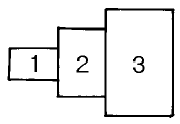
- 1 젼 2 젼 3
- 2 젼 3 젼 1
- 3 젼 2 젼 1
- 순서에 상관없다.
(정답률: 알수없음)
39. 원형자장을 이용한 자분탐상시험에 환봉의 직경이 25mm, 길이가 300mm이고, 코일의 감은 수가 5회일 때 자화전류값은 ?(단, 상수(K)=45000)
- 500암페어
- 750암페어
- 1200암페어
- 1500암페어
(정답률: 알수없음)
40. 거치식 자분탐상장치에서 방전시간이 아주 짧은 충격전류를 이용하는 것으로 짧은 시간내에 매우 큰 자화전류를 생성시키는 장치는?
- 축전기방전식 장치
- 전류게이트식 장치
- 동기장치
- 로드셀
(정답률: 알수없음)
3과목: 자기탐상관련규격및컴퓨터활용
41. 다음 중 자분탐상시험후 탈자하지 않아도 되는 경우는?
- 시험품의 잔류자기가 계측장치에 영향을 미칠 때
- 시험후 시험품을 열처리할 때
- 시험품이 마찰부분에 사용될 때
- 시험후 시험품을 직류 용접할 때
(정답률: 알수없음)
42. ASME Sec.Ⅴ에 따라 습식 자분을 사용할 때 시험체 표면의 허용 온도 한계는?
- 135℉ 이하
- 135℉이상 275℉이하
- 275℉이상 600℉이하
- 600℉ 이상
(정답률: 알수없음)
43. ASME Sec.Ⅷ, Div.1에 따라 검출된 자분지시를 평가할 때 다음 중 옳은 내용은?
- 크기가 1mm인 원형지시 4개가 1mm 간격으로 거의 일직선상에서 검출되어 선형지시로 평가하였다.
- 크기가 2mm인 원형지시 3개가 1mm 간격으로 거의 일직선상에서 검출되어 불합격으로 평가하였다.
- 크기가 2mm인 선형지시가 독립적으로 검출되어 불합격으로 평가하였다.
- 크기가 1mm인 선형지시와 2mm인 원형지시가 1mm 간격으로 검출되어 불합격으로 평가하였다.
(정답률: 알수없음)
44. 자화전류가 교류인 요크 장비의 리프팅 파워는 얼마 이상이어야 하는가? (단, 극간 거리는 최대로 한다.)
- 3.5kg
- 4.5kg
- 8.5kg
- 9.5kg
(정답률: 알수없음)
45. 전 세계 인터넷 사용자 및 서비스 제공업체들이 각 분야별로 공지 사항 및 최신 정보나 뉴스를 게시, 검색할 수있게 해주는 서비스는?
- Gopher
- WWW(World Wide Web)
- WAIS
- USENET
(정답률: 알수없음)
46. 그림과 같이 서로 떨어져 있는 여러 개의 파일(검정 바)을 선택하는 방법은?
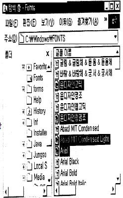
- 해당 파일을 마우스로 클릭한다.
- 툰키를 누른 채 해당 파일을 마우스로 클릭한다.
- 툼키를 누른 채 해당 파일을 마우스로 클릭한다.
- 툴키를 누른 채 해당 파일을 마우스로 클릭한다.
(정답률: 알수없음)
47. ASME Code에 따라 건식 자분탐상시험을 실시할 때 검사체 표면온도가 몇 ℃ 이상이면 자분탐상을 실시하지 말아야 하는가?
- 100℃
- 166℃
- 316℃
- 450℃
(정답률: 알수없음)
48. ASME code에서 코일을 사용하여 긴 시험품을 자화할 때 1회 자화시 최대 길이로 다음 중 맞는 것은?
- 25cm
- 30cm
- 38cm
- 46cm
(정답률: 알수없음)
49. 다음은 PC의 소프트웨어에 대한 내용이다. 이 중 틀린 것은?
- 하드웨어가 컴퓨터 시스템의 물리적인 측면을 나타내는데 비해 소프트웨어는 논리적인 동작을 나타 낸다.
- 소프트웨어는 흔히 프로그램이라고 하며, 이러한 프로그램은 방송이나 음악회의 프로그램처럼 작업의 진행 순서를 논리적으로 나열한 것이다.
- 프로그램에서 사용되는 명령어는 C언어, Visual Basic 언어 등의 프로그래밍 언어의 문법에 따라 작성되어야 하는데, 이렇게 컴퓨터 명령어를 이용하여 프로그램을 작성하는 일을 프로그래밍이라고 한다.
- 소프트웨어중의 시스템 소프트웨어는 특정 목적을 위해 작성한 프로그램으로 워드 프로세서, 웹 브라우저가 대표적인 예이다.
(정답률: 알수없음)
50. KS 규격에 따라 잔류법으로 자분탐상시험하는 경우 자분모양의 관찰이 끝날 때까지 시험면에 다른 시험체를 접촉시켜서는 안되는 이유로 올바른 것은?
- 자극지시가 생기기 때문이다.
- 전극지시가 생기기 때문이다.
- 자기펜자국이 생기기 때문이다.
- 재질경계지시가 생기기 때문이다.
(정답률: 알수없음)
51. ASME 규격에서 자외선등을 사용하여 자분탐상시험을 할때 시험체 표면에서의 강도는 몇 Foot candles이상이어야 하는가?
- 40
- 60
- 90
- 150
(정답률: 알수없음)
52. ASTM E 709에서 요구하는 습식자분 현탁액의 최고 점도는?(단, 38℃에서)
- 1센티스토크
- 2센티스토크
- 3센티스토크
- 5센티스토크
(정답률: 알수없음)
53. ASME Sec.Ⅷ, App.6의 자분탐상시험에 관한 규정중 관련지시로 간주하는 지시모양의 최소 길이는?
- 1/32 인치이하
- 1/32 인치초과
- 1/16 인치이하
- 1/16 인치초과
(정답률: 알수없음)
54. 웹서비스에서 제공되는 여러 가지 자원들에 대한 주소를 나타내는 것은?
- HTTP
- URL
- HTML
- XML
(정답률: 알수없음)
55. 컴퓨터에서 정중하고 교양있는 네트워킹 통신과 행동을 무엇이라 하는가?
- emoticon
- netizen
- etiquette
- Netiquette
(정답률: 알수없음)
56. KS D 0213에서 자분의 모양에 대한 시험기록시 기재하지 않아도 되는 것은?
- 제조자 명
- 전처리 내용
- 형광,비형광의 구별
- 형번, 입도, 색
(정답률: 알수없음)
57. ASME 규격에서 자분탐상시험시 시험품의 직경 및 길이에 의한 5,000암페어.턴(Amp.-turn)이 요구된다면 5회 감긴 코일 사용시 몇 암페어가 필요한가?
- 1,000암페어
- 1,500암페어
- 2,000암페어
- 5,000암페어
(정답률: 알수없음)
58. KS D 0213에서 자분의 분산매에 따라 분류된 시험방법은?
- 연속법, 잔류법
- 건식법, 습식법
- 형광자분,비형광자분
- 직류, 맥류
(정답률: 알수없음)
59. KS D 0213의 A형 표준시험편의 명칭중 사선의 왼쪽(분수의 분자)은 무엇을 표시하는가?
- 인공흠의 깊이
- 인공흠의 폭
- 인공흠의 직경
- 표준시험편의 두께
(정답률: 알수없음)
60. KS D 0213에서 잔류법을 사용할 때 원칙적으로 통전시간의 설정은 몇 초로 하는가?
- 1/4 ∼1초
- 1/2 ∼1초
- 1초∼2초
- 2초∼3초
(정답률: 알수없음)
4과목: 금속재료 및 용접일반
61. 용접봉의 용융속도를 나타내는 것으로 가장 적합한 것은?
- 단위 시간당 소비되는 용접봉의 길이 또는 무게
- 단위 시간당 소비되는 아크전압
- 단위 시간당 소비되는 아크전류
- 단위 시간당 진행되는 용접속도
(정답률: 알수없음)
62. 다음 중 플래시 용접의 장점이 아닌 것은?
- 용접 강도가 크다.
- 전력 소모가 적다.
- 업셋량이 크다.
- 모재 가열이 적다.
(정답률: 알수없음)
63. 잔류응력에 대한 설명으로 올바른 것은?
- 심각한 결함이 아니므로 커도 좋다.
- 제거를 위하여 용접 후 열처리가 필요하다.
- 저온에서 사용하는 구조물에서는 아무 영향이 없다.
- 국부적으로 일어나지 않으며 응력 부식에 관계 없다.
(정답률: 알수없음)
64. 다음 용접이음에서의 잔류 응력을 측정하는 방법 중 정량적 방법이 아닌 것은?
- 부식법
- 응력 이완법
- X 선법
- 광탄성에 의한 방법
(정답률: 알수없음)
65. 전기저항용접법인 점용접 조건의 3요소에 대하여 설명한 것 중 틀린 것은?
- 구리나 알루미늄과 같은 열전도도가 큰 재료는 낮은 전류를 사용한다
- 전류값이 너무 크면, 과열되어 용융금속이 밖으로 나오고, 표면이 오목하게 된다.
- 강판을 점용접할때 적정전류에 통전시간을 길게 한다
- 가압력이 적을 때는 접촉저항 분포가 불균일하다.
(정답률: 알수없음)
66. 고강도 저합금강으로써 자동차용 탄소강판의 대용제품은?
- STS 합금
- HSLA합금
- WPC강
- FRM강
(정답률: 알수없음)
67. Fe - C 상태도에서 철금속재료 분류시 강(steel) 의 탄소함유량은?
- 약 0.0001% 이하
- 약 0.0218∼2.11%
- 약 2.12∼6.67%
- 약 6.68% 이상
(정답률: 알수없음)
68. 재결정온도가 약 1000℃에 해당되는 금속은?
- Cu
- W
- Sn
- Ni
(정답률: 알수없음)
69. 금속이나 합금 중 면심입방격자에 대한 설명이 옳은것은?
- 단위정내에 2개의 원자가 있다.
- 체심입방격자와 같은 조대한 구조를 가지고 있다.
- 원자충전인자는 0.68 이다.
- 대표적인 금속은 Cu, Aℓ , Ni 등이다.
(정답률: 알수없음)
70. 40㎜2의 단면적을 갖는 재료에 500㎏f의 최대하중이 작용 하였다면 이 재료의 인장강도(㎏f/㎜2)는?
- 10.0
- 12.5
- 15.0
- 16.5
(정답률: 알수없음)
71. 연강판의 가스 용접시 모재 두께가 3mm 일 때, 다음 중 가장 알맞는 용접봉의 직경은?
- 1mm
- 1.5mm
- 2mm
- 4mm
(정답률: 알수없음)
72. 다음 용접법 중 전기 저항 용접인 것은?
- 업셋 맞대기 용접
- 전자비임 용접
- 피복 아크 용접
- 탄산가스 용접
(정답률: 알수없음)
73. 변형 전과 후의 위치가 어떠한 면을 경계로 하여 대칭이 되는 것과 같은 변형은?
- 슬립변형
- 탄성변형
- 연성변형
- 쌍정변형
(정답률: 알수없음)
74. 금속을 냉간가공하면 결정입자가 미세화 되어 재료가 단단해 지는 현상은?
- 가공경화
- 취성파괴
- 시효경화
- 표면경화
(정답률: 알수없음)
75. 보기와 같은 용접기호의 표시법에 대한 설명으로 틀린 것은?
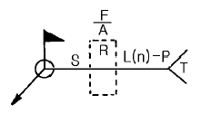
- F: 다듬질 방법의 기호
- A: 홈의 루트 간격치수
- S: 용접부의 단면치수 또는 강도
- n: 점 용접 등의 수
(정답률: 알수없음)
76. 청동용탕중에 0.⑤-0.5% 첨가함으로써 탈산작용과 용탕의 유동성 개선 및 강도, 경도, 내마모성, 탄성을 향상 시키는 원소는?
- Aℓ
- Si
- P
- Pb
(정답률: 알수없음)
77. AW 300인 교류 아크용접기의 정격 사용률이 40%일 때, 이 용접기의 정격 사용률에 대한 설명으로 올바른 것은?
- 300[A]의 전류로 용접했을 때 10분 중 6분만 용접하고, 4분을 쉰다는 뜻이다.
- 300[A]의 전류로 용접했을 때 10분 중 4분만 용접하고, 6분을 쉰다는 뜻이다.
- 120[A]의 전류로 용접했을 때 10분 중 6분만 용접하고, 4분을 쉰다는 뜻이다.
- 120[A]의 전류로 용접했을 때 10분 중 4분만 용접하고, 6분을 쉰다는 뜻이다.
(정답률: 알수없음)
78. 용접시공에서 본 용접하기 전에 가접할 때 일반적인 주의사항으로 틀린 것은?
- 본 용접과 같은 온도에서 예열한다.
- 본 용접자와 동등한 기량을 갖는 용접자로 하여금 가접하게 한다.
- 용접봉은 본 용접 작업할 때 사용하는 것보다 약간 굵은 것을 사용한다.
- 가접의 위치는 부품의 끝 모서리, 각 등과 같이 단면이 급변하여 응력이 집중되는 곳은 가능한 피한다.
(정답률: 알수없음)
79. 베어링용으로 사용되는 합금이 갖추어야 할 조건이 아닌것은?
- 소착에 대한 저항력이 커야한다.
- 내식성이 좋아야 한다.
- 표면이 취성과 연질이어야 한다.
- 내 하중성이 좋아야 한다.
(정답률: 알수없음)
80. 6:4황동에 Fe를 1-2% 첨가한 구리합금은?
- 코로손
- 델타메탈
- 애드미럴티
- 인청동
(정답률: 알수없음)